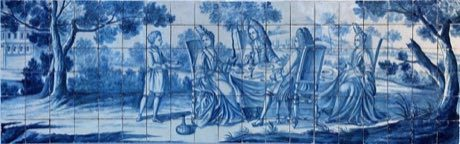
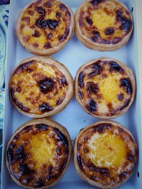
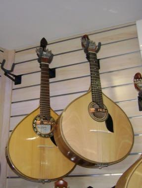

Home / Living Traditions / Mediterranean
Encyclopedia ID 122
Azulejo tile painting
Also known as Azulejo


Place and paint blue-and-white tiles so a panel pattern or scene lines up across a wall.
Heritage note
Part of the living heritage of Portugal. Some forms of this practice carry deep meaning for the communities who keep it; here we describe the play and the craft only, with respect for its roots.
Origins
A living tradition passed from person to person; it is not tied to a single dated origin. It belongs to the cultural world of Mediterranean.
Sources
Related entries

Zellij tile mosaic
Morocco · Crafts and making
Glassblowing
Italy · Crafts and making
Txalaparta Duet
Spain · Musical instruments
Tessellated Mosaic Making
Italy +1 · Crafts and making
Swahili carved door
Kenya · Crafts and making
Thai fruit and vegetable carving
Thailand · Crafts and making
More from Portugal

Macau Portuguese Custard Tart Bake
Portugal +1 · Crafts and making
Malha
Portugal · Archery, throwing and target games
Portuguese Guitar
Portugal · Musical instrumentsPortuguese staff fighting
Portugal · Street and playground games